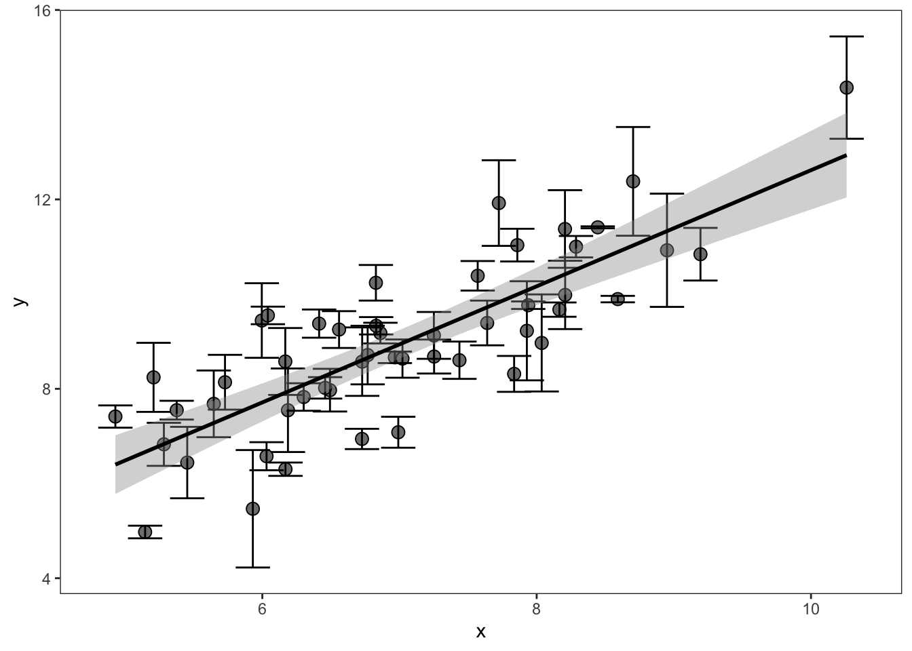
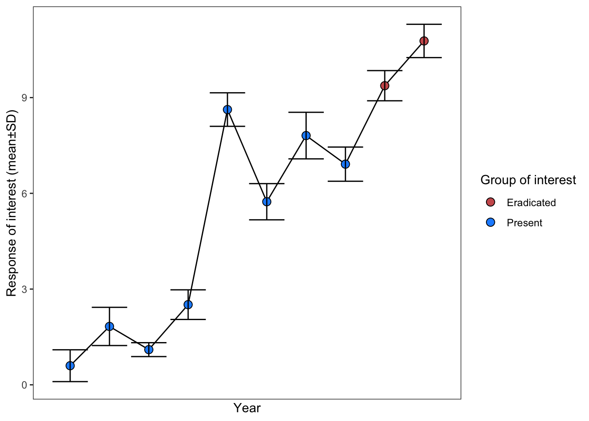
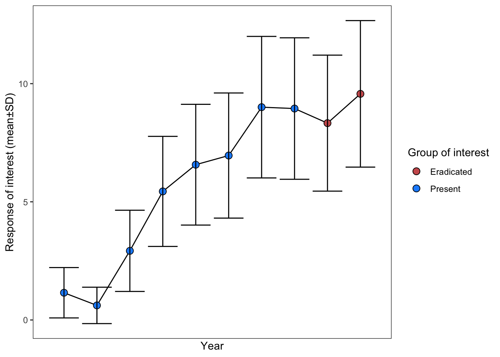

Simulating non-Gaussian data
Additional, homeless helpers
The dark magic of data reconstruction
Reconstructing the underlying distributions that lurk beneath data summaries is one of the most interesting and potentially dangerous tricks in our meta-analysis toolkit. These cases are experimental and require further research yet also can do something very important: align the units of replication of the data underlying your meta-analysis.
These tools are for figures like this, which we have already described here:
Or, like this for an SMD effect size:

If the data in these figures (underlying each point) is normally distributed you can use rnorm to simulate the original dataset based on the means, standard deviations, and sample sizes (as our code in those sections demonstrated). This allows you to calculate effect sizes on results that may otherwise be unextractable. However, this assumes that data is normally distributed, which may be not be true in the case of ecological or evolutionary data.
Determing the correct distribution
To understand whether the underlying data can be drawn safely from the normal distribution, you need to think carefully about the data generating process.
- Is the data discrete, e.g., count data or abundance data?
Abundance data generally follows a negative binomial or Poisson distribution. Data bounded between 0 and 1 (e.g., cover data) follows the Beta distribution.
- What is the relationship between the means and reported error?
In normally distributed data the coefficient of variation (\(\frac{sd}{m}\)) should be <X. The variance (\(sd^2\)) of Poisson type data should be equal to the mean (which is unusual). In negative binomial data, the variance should be greater than the mean.*
Use these rules of thumb to help decide what distribution the underlying data is. Once you have a good idea, you then need to use distributionally specific formulas to convert the author-provided summary statistics (mean, standard deviation) to the distribution’s own parameters. For example, negative binomial uses size instead of standard deviation to describe its dispersion. Luckily, as we show below, converting standard deviation to size is possible.
Here is a table of the parameters necessary to simulate data in most distributions you’ll encounter during a meta-analysis, along with the formulas to convert standard deviation to these parameters.
| distribution | diagnosis | common applications |
|---|---|---|
| Normal | continuous; XXXX; \(CV < XXXX\) | XXXX |
| Negative binomial | count; Variance > mean | Abundance data, XXX |
| Poisson | count; Variance ≈ mean | Count data, XXX |
| Binomial | probability (0-1) across trials; \(sd < \sqrt(m)\) | success, survivorship, survival |
| Beta | proportion bounded between 0 and 1 | Cover data, XXXX |
Negative binomial
THIS WORKED BEFORE AND NOW DOESN’T Also, is this really ok to do???
We will here simulate the underlying data for negative binomial derived abundance data, as you might encounter in a time series (similar to the figure above).
The object dt here is a dataset extracted from an article with Mean±SD for two groups in a time series (similar data as in our normally distributed example here).

The data looks like this:
| status | mean | sd | N |
|---|---|---|---|
| Present | 1.1524651 | 1.065522 | 10 |
| Present | 0.6170123 | 0.770047 | 10 |
| Present | 2.9255908 | 1.718619 | 10 |
| Present | 5.4405181 | 2.328788 | 10 |
| Present | 6.5707700 | 2.554691 | 10 |
| Present | 6.9582480 | 2.647414 | 10 |
| Present | 9.0049238 | 2.994180 | 10 |
| Present | 8.9468565 | 2.993109 | 10 |
| Eradicated | 8.3295040 | 2.877561 | 10 |
| Eradicated | 9.5688325 | 3.100062 | 10 |
Note that in the negative binomial distribution, the standard deviation has a positive relationship with the mean, which is an indicator that this data is generated by a process described by the negative binomial distribution.
Now let’s convert the author provided sd to size, which is the parameter that describes the dispersion of the negative binomial family. This is based on the following relationship between the mean (\(m\)), variance (\(Var\)), and size (\(size\)):
\[\begin{aligned} Var = m + \frac{m^2}{size} \end{aligned}\]
Solving for size (which is the negative binomial flavor of dispersion):
\[\begin{aligned} size = \frac{m^2}{Var - m} \end{aligned}\]
Note that Variance must be greater than the mean for the negative binomial distribution. As such, if just some of our data has a Variance < the mean, we’ll set Variance equal to the mean.
# First, calculate the size dispersion parameter:
dt[, var := sd^2]
dt[, size := mean^2 / (var - mean)]
dt[var < mean, var := mean + 0.01]
# Now expand dataset with rnbinom:
dt_expanded <- list()
for(i in 1:nrow(dt)){
dt_expanded[[i]] <- data.table(y = rnbinom(mu = dt$mean[i],
size = dt$size[i],
n = dt$N[i]),
status = dt$status[i])
}
dt_expanded <- rbindlist(dt_expanded)
# Now summarize to calculate our effect size of interest:
final_dt <- dt_expanded[, .(mean = mean(y),
sd = sd(y),
total_n = .N),
by = .(status)]
knitr::kable(final_dt)| status | mean | sd | total_n |
|---|---|---|---|
| Present | NaN | NA | 80 |
| Eradicated | NaN | NA | 20 |
These values can then be used to calculate your SMD / lnRoM / Zmu effect size.
Poisson
The Poisson distribution takes \(\lambda\) (lambda) to describe its dispersion. \(\lambda\) is equal to the mean. This case is likely very unusual in most data. If your data is truly Poisson, then you’d use similar code as what we described above, except we’d draw Poisson data with the R function rpois as follows:
rpois(n = 10, lambda = 1) [1] 2 0 0 3 1 2 0 0 3 1Binomial
Some studies report mean±sd (\(m±sd\)) proportions (or probabilities) across trials/sites/islands/years. For example, the mean proportion of nests that fledged across several islands or the mean proportion of seedlings that survived across plots.
You can readily meta-analyze this data using an SMD/lnRoM/Zmu type effect size with trials/sites/islands/years as the unit of replication, after transforming the mean and standard deviation (see here)
However, this type of data is naturally an lnOR type effect size, with a discrete outcome (e.g., fledged, survived) and if the rest of your dataset uses individual as the unit of replication, these effect sizes will be considerably underweighted and will be fundamentally incomparable.
However, it is possible to convert data summaries like this into the underlying binary outcomes using the binomial distribution. The binomial distribution describes the probability of success (\(p\)) across \(t\) trials (sites/islands/years) and \(n\) individuals. Note that \(m\) is usually used for number of trials in binomial formulas but, since we have been referring to means as \(m\), we will refer to number of trials as \(t\).
Doing so requires that you know the number of individuals (\(n\)), e.g. total number of nests or individuals monitored. There are ways to estimate the number of individuals but doing so assumes that \(p\) is equal across all trials, which is unlikely in the real world. We also suspect that most studies present the number of individuals (though potentially across all trials and not per trial/site/etc).
You can then draw binomial data in R, with size equivalent to the number of individuals and n equivalent to the number of trials/sites/islands. In the code below, we’re simulating data for an author-reported mean of 0.4, from 5 separate trials/sites/islands, each of which had 10 individuals:
n_individuals = 10
mean_proportion = 0.4
n_sites = 5
out <- rbinom(size = n_individuals,
p = mean_proportion,
n = n_sites)
out[1] 4 2 4 2 4Each element of the resulting vector is the number of individuals (of 10 total) that experienced the binomial outcome. We can now coerce this into a format that is compatible with calculating lnOR type effect sizes (with only one level of treatment).
You might note that the author-provided \(sd\) was ignored. This is because the binomial distribution assumes that variance is a direct result of the proportion (\(p\)) and number of individuals (\(n\)):
\[ \begin{aligned} &Var(p) = \frac{p(1-p)}{n} \\ \end{aligned} \]
For that reason, you should check whether the author-reported standard deviation is equal or less than the theoretical standard deviation of the binomial distribution. With \(\bar{p}\) as the reported mean proportion and \(n\) as the number of individuals, the theoretical \(sd_{theoretical}\) should be:
\[ \begin{aligned} sd_{theoretical} = \sqrt{\frac{\bar{p}(1-\bar{p})}{n}} \end{aligned} \]
If the reported \(sd\) is larger than this, you should use the Beta-Binomial distribution instead. Or, consider analyzing this data, and similar data, separately as an SMD type effect size with the number of trials/sites as the unit of replication.
We demonstrated similar conversions for Zr type data here.
Beta-Binomial
It is highly likely that the author-reported \(sd\) is larger than the theoretical binomial \(sd\). If this is the case, we can inject variance (\(sd^2\)) into the data generating process by using the Beta-Binomial distribution. To do so we need to calculate Beta distribution shape parameters (\(\alpha\) and \(\beta\)). This can be based on the following relationships, with \(m\) and \(sd\) as the author-reported mean and standard deviation:
\[\begin{aligned} & Var = sd^2 \\ & r = (\frac{m(1-m)}{Var}) - 1\\ & \alpha = m * r \\ & \beta = (1-m) * r \\ \end{aligned}\] In R:
library("extraDistr")
n_individuals = 10
mean_proportion = 0.4
sd = 0.12
n_sites = 5
var <- sd^2
r <- (mean_proportion * (1 - mean_proportion) / var) - 1
alpha <- mean_proportion * r
beta <- (1 - mean_proportion) * r
out <- rbbinom(n = n_sites, size = n_individuals, alpha = alpha, beta = beta)
out[1] 2 4 6 2 6This vector gives the estimated number of outcomes (e.g. fledged or survived or died) per individual in each trial, while accounting for standard deviation. We can check how closely it matches the author provided means±sd:
Very closely!
See above on how to convert this into the key ingredients for an lnOR effect size calculation or see our more thoroughly worked example here.